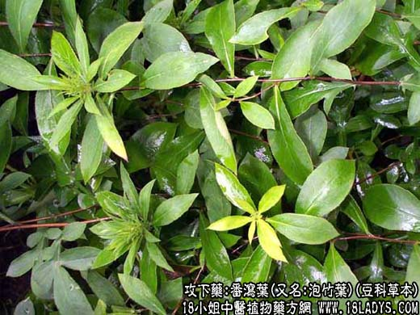

【中药概述】
番泻叶为豆科草本植物狭叶番泻的叶。甘、苦，寒。归大肠经。
1．泻热通便：用于热结便秘，腹部胀满，习惯性便秘，产后便秘等。可单用泡茶服。小量缓下，大量峻下。
2．腹水胀满：有行水消胀作用。不分寒热证皆可应用。
【药效鉴别】
本品甘苦寒，能泻热通便，力量较大黄强，兼能行水消胀，而治腹水膨胀。
【临证应用】
轻型肠粘连或部分性肠梗阻：川朴，炒莱菔子，木香，乌药，桃仁，赤芍，番泻叶，芒硝。
【药理作用】
1.有明显的泻下作用；
2.对致病皮肤真菌有抑制作用，对葡萄球菌、白喉杆菌、大肠杆菌等有抑制作用。
【化学成分】
番泻叶甙（即大黄酸-芦荟大黄素-二蒽酮-8.8）、二葡萄糖甙、大黄酚、鞣质等。
【用量用法】
2——10g，水煎服，或开水泡服。
【使用注意】
体虚者、孕妇、月经期、哺乳期应慎用或忌用。服用过量会引起恶心、呕吐、腹痛等副作用。